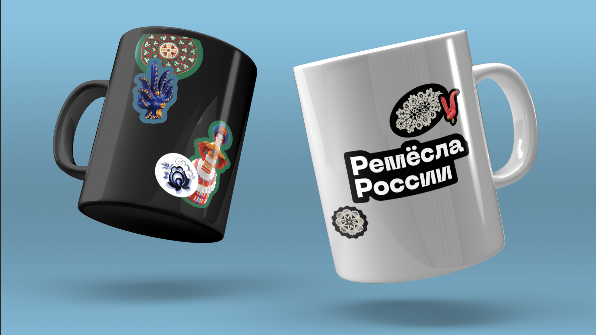
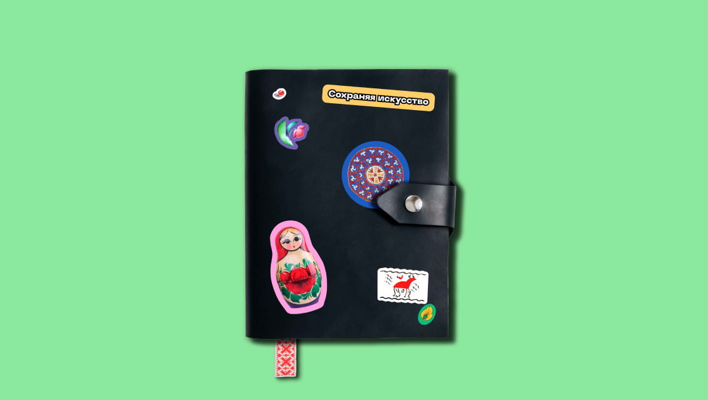
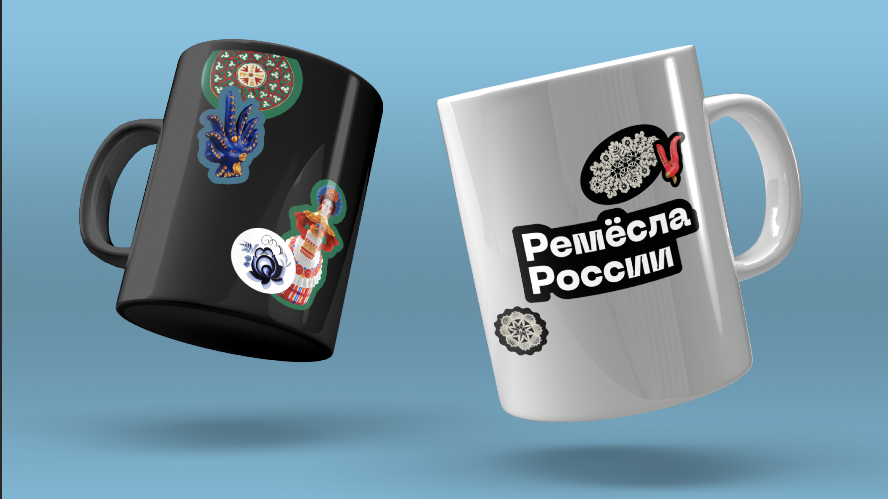
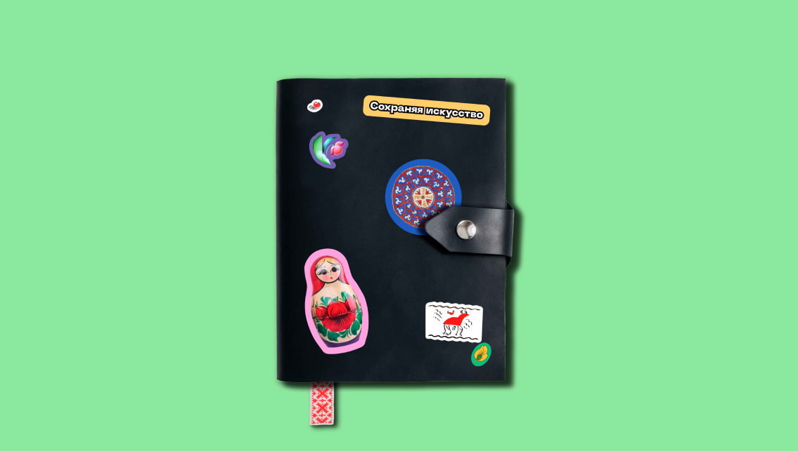

Наш проект собирает информацию о ремёслах и искусствах разных регионов страны и рассказывает о них — наглядно, доступно и интересно. Фирменный стиль отражает ценности и цели проекта, выстраивает диалог с пользователям на современном языке, чтобы «оживить» традиционные промыслы, сделать их частью сегодняшнего мира.
Стайлгайд
О бренде
Ценности бренда
- Сохранение народных традиций и приобщение к ним
- Связь между прошлым и настоящим
- Повышение осведомлённости о визуальном наследии разных народов
- Делиться информацией доступно, современно и интересно
- Уважительное отношение ко всем культурам
Характер бренда
- Открытый
- Дружелюбный
- Любознательный
- Увлечённый
- С вниманием к деталям
- Яркий
Наша миссия — популяризация народных ремёсел и искусств
Логотип
В логотипе используется название проекта и шейп, повторяющий форму слов. Это поддерживает общую систему стиля, построенную на использовании «стикеров».
Слова могут быть по-разному расположены относительно друг друга, в зависимости от целей и используемых носителей, но основной вид — написание в две строки с выравниванием по левому краю.
Недопустимо ставить слова логотипа слишком далеко друг от друга.
Цвета
Для выбора цветовой гаммы стиля мы проанализировали цвета, используемые в народных ремёслах, и решили использовать не самые часто встречаемые (красный, золотой, цвет обожжённой глины и необработанного дерева), а более редкие, менее банальные, но всё равно отсылающие к народным искусствам:

Светло-розовый, вдохновением для которого стали павловопосадские платки

Изумрудно-зелёный, отсылающий к цвету малахита, материала ремесленников с Урала

Оттенок синего, основой для которого стал цвет хрустальных изделий из Пензенской области
Эти три основных цвета, а также чёрный и белый, используются для создания контента, связанного непосредственно с брендом (мерч, сайт).

Типографика
В логотипе и заголовках первого порядка мы используем шрифт PP Neue Machina в начертании Inktrap Ultrabold. Символы в этом начертании имеют небольшие особенности, создающие характер шрифта, что согласуется со стилем и повесткой бренда — обращать внимание на маленькие, но важные элементы.
PP Neue Machina
Inktrap Ultrabold
Аа Бб Вв Гг Дд Ее Ёё Жж Зз Ии Кк Лл Мм Нн Оо Пп Рр Сс Тт Уу Фф Хх Цц Чч Шш Щщ Ъъ Ьь Ээ Юю Яя
0 1 2 3 4 5 6 7 8 9 «,.»?!
Для заголовков других порядков используется также шрифт PP Neue Machina, но в начертании Plain Ultrabold.
PP Neue Machina
Plain Ultrabold
Аа Бб Вв Гг Дд Ее Ёё Жж Зз Ии Кк Лл Мм Нн Оо Пп Рр Сс Тт Уу Фф Хх Цц Чч Шш Щщ Ъъ Ьь Ээ Юю Яя
0 1 2 3 4 5 6 7 8 9 «,.»?!
Шрифт для основного набора текста — PP Neue Montreal в начертании Book, для важных фрагментов — Medium, для сносок — Italic.
PP Neue Montreal
Medium, Book, Italic
Аа Бб Вв Гг Дд Ее Ёё Жж Зз Ии Кк Лл Мм Нн Оо Пп Рр Сс Тт Уу Фф Хх Цц Чч Шш Щщ Ъъ Ьь Ээ Юю Яя
0 1 2 3 4 5 6 7 8 9 «,.»?!
Ремёсла России
Font size: 1x
Line height: 0.85x
Стикеры
Основа фирменного стиля нашего проекта — стикеры. В стикерах используются изображения народных промыслов (целые объекты или их фрагменты), а также слова и словосочетания. Эти изображения помещаются на «основу» — шейп, повторяющий форму растрового изображения/текста, или шейп геометрической формы (возможно использование резных или волнистых краёв).
Фотографии ремёсел должны быть в хорошем качестве и равномерно освещены. Вырезать фрагменты из изображений необходимо аккуратно.
Текстовые стикеры могут использоваться как заголовки или акцентные элементы (названия ремёсел, территорий, разделов).

Цвет шейпа выбирается из трёх фирменных цветов, чёрного и белого. Важно, чтобы цвет шейпа не перебивал цвет растрового изображения. Для ремёсел, которые традиционно используют белый или чёрный фон, рекомендуется использовать шейп соответствующего цвета (белый шейп для элементов гжельской росписи; чёрный цвет для элементов с жостовского подноса).
Недопустимое использование:
Сетка
Сетка используется только для размещения текста. Стикеры располагаются более хаотично, но со смещением к краям занимаемого пространства.

Носители стиля
 


